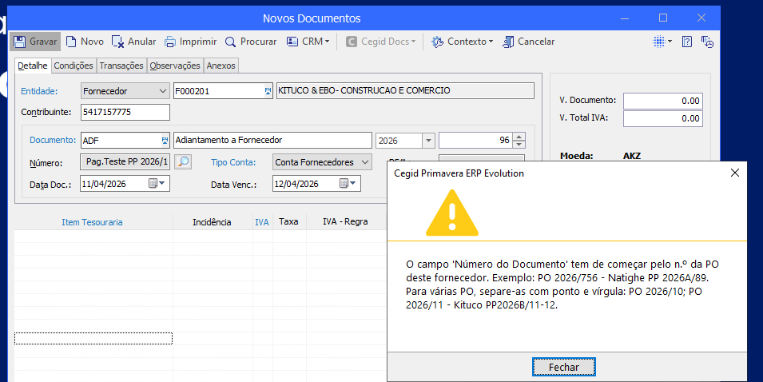
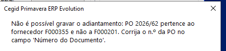

Cegid Evolution ERP Primavera · Current Accounts
Supplier advance payments with the PO number
Every Supplier Advance Payment (ADF) must now state, in the Number field, the purchase order (PO) it relates to. The system checks the field on saving and will not save an ADF without a valid PO from the supplier.
Steps
Open a new ADF
In Current Accounts, open New Documents and select the
ADFdocument.Enter the supplier
In Entity, select Supplier and type the code, for example
F000201.Type the PO first
In the Number field, delete the suggested number and type the PO in the format
TYPE SERIES/NUMBER. Any text may follow the PO, for example the supplier’s pro forma.Several POs? Use a semicolon
Example:
PO 2026/10; PO 2026/11 - Kituco PP2026B/11-12.Complete and save
Fill in the dates, the treasury item and the amount as usual, and click Save.
If a warning appears
The ADF is not saved. Close the warning, correct the Number field and save again.


The Number field must have
AcceptedPO 2026/756 - Natighe PP 2026A/89
RejectedPag.Natighe PP 2026A/89 (no PO)
AcceptedPO 2026/10; POL 2026/12
RejectedNatighe - PO 2026/756 (PO at the end)
If a warning appears
“Must start with the PO number”: type the PO at the start of the field; the supplier reference (PP, ORC, FT) goes after it.
“Does not exist in this company”: check the PO number and type with Procurement, and that you are in the right company.
“Is cancelled”: ask Procurement for the number of the PO that replaced the cancelled one.
“Belongs to supplier X, not Y”: correct the ADF supplier or the PO entered.